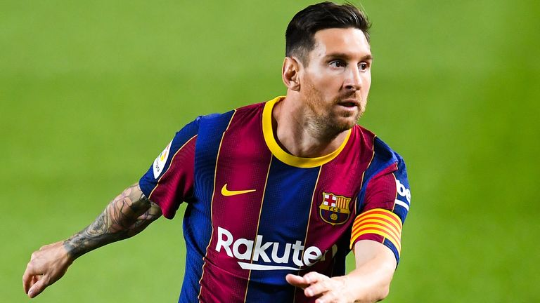
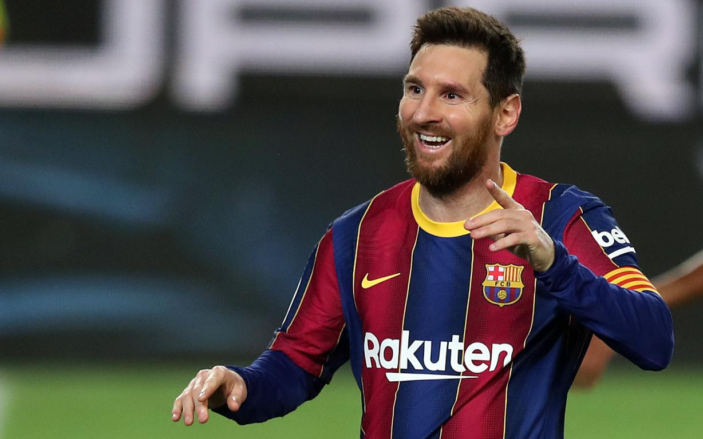

Agency 28 Feb 2021
Having 13 Games and 14 goals Leo Messi performing again outclass in
2021. He has provided 8 Assists too. no other player could make these
much of goals in 2021.

He scored in 8 consecutive matches as he scored second goal in Ramon
Sanchez. The star forward’s return to form has dominated Barcelona
news and has been at the heart of the club’s resurgence on the pitch
in recent weeks. Messi came on as a second half substitute at Real
Betis with his side trailing 1-0 at the break, but he scored once and
was the catalyst for the turnaround in a dramatic 3-2 triumph.
Lionel Messi He then grabbed a brace and provided an assist in the 5-1
win over Alaves and then scored the side’s penalty in an underwhelming
1-1 draw at home to Cadiz. The 33-year-old then netted twice in a 3-0
win over Elche before scoring and assisting in last weekend’s
triumphat Sevilla.

Messi's goalscoring habits helped Barca win four of their five games
in the qualifying period, all of which saw him score at least once. As
such, Barca have improved their chances of potentially sparking a
genuine title scrap in the final months of the season, with the
Blaugrana only five points adrift of the leaders Atletico Madrid.
While Diego Simeone's men do still have a game in hand, Los
Colchoneros also have the tricky test of a derby clash with Real
Madrid to look forward to this weekend. Messi's commitment to the
cause was questioned earlier in the campaign after he rocked the club
in pre-season with his transfer request. He had only scored four times
heading into December when he added a further three – he already has
12 in 2021 and sits atop the 'Pichichi' standings with 19, three clear
of nearest rival and friend Luis Suarez.